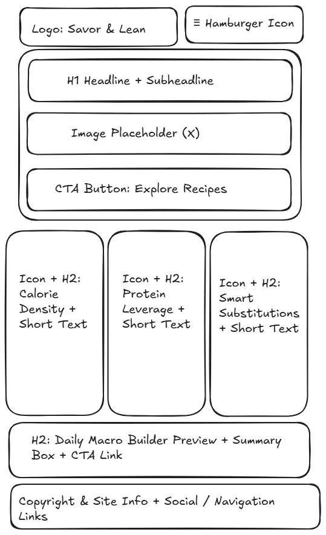
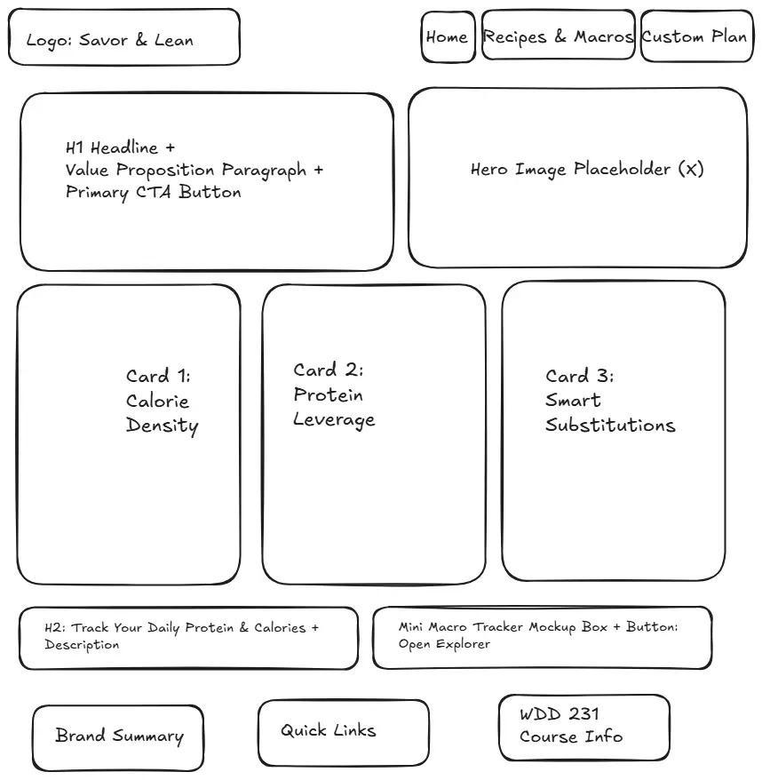

Deep Sage Green
#1B4332
Usage: Main headers, primary buttons, navigation bar, and footer background (paired with #FFFFFF text).
High-Protein Whole Food & Smart Fat Loss Hub | WDD 231 Individual Project
Select Name: Savor & Lean
Rationale:The name bridges two concepts often treated as opposites in diet culture: enjoying rich, satisfying flavors (Savor) and achieving sustainable fat loss and muscle retention (Lean). It immediately communicates a practical, non-restrictive culinary approach to nutrition.
Optional Domain Availability: savorandlean.org
Savor & Lavor is a three-page informational and interactive web application designed to help busy individuals achieve sustainable fat loss without relying on bland, repetitive meals. The platform achieves this through:
index.html): Explains calorie density, protein leverage, and smart ingredient substitutions using whole grains, legumes, healthy fats, and high-protein dairy.recipes.html): Provides a filterable catalog of 18+ balanced recipes loaded from a local JSON file, accessible detail modals, and a persistent Daily Macro Builder powered by localStorage.custom-plan.html): Offers an accessible form where visitors submit their dietary preferences, schedule, and goals to generate a tailored summary via URL parameters.This document exclusively uses the selected palette below, verified for WCAG AA contrast compliance:
#1B4332
Usage: Main headers, primary buttons, navigation bar, and footer background (paired with #FFFFFF text).
#9E2A2B
Usage: Macro badges, section borders, active filter states, and secondary call-to-action highlights.
#FAF7F2
Usage: Primary page background to create a clean, organic editorial feel.
#1F2937
Usage: Primary body text, recipe ingredients, and form labels.
Applied to: Page titles (h1), section headings (h2), and recipe card titles (h3) to convey culinary warmth and editorial credibility.
Body & UI Font: Plus Jakarta Sans (Sans-Serif, 400/500/700)
Applied to: Body paragraphs, navigation links, filter buttons, nutritional metrics, and form inputs for crisp readability across mobile and desktop viewports.
Black-and-white structural wireframes illustrating the responsive layout for index.html across small and large viewports:

